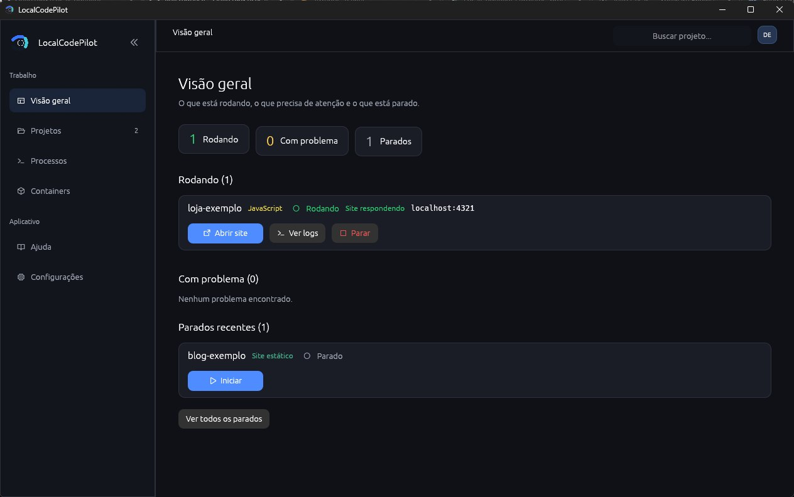

backend-apiLaravelRunningSite responding
localhost:8000Click Start and your project is up. LocalCodePilot recognizes your project, from Node, PHP, and Python to .NET, Ruby, Elixir, and Zig, prepares what is missing (even the language itself), and shows the address, ports, and logs in one place.
Open source · Public alpha · Your workflow stays local
Interactive demo
Overview
What is running, what needs attention and what is stopped.
Running (1)
localhost:8000Needs attention (1)
Stopped (1)
Simulated in your browser: no real command is run.
REAL SCREENSHOTS
The demo above is a simulation. Here are real Alpha 9 screens with sample projects: from a stopped project to a responding site.

Install the dependencies so you can start this project.
Check the command before the first run.
The project is running and the site is responding.
In the Projects list, open the site, view the logs or open the technical details.
LOCAL / DEV / CONTROL
Open the project. See what is running. Find the next step without losing context.
01 / THE PRODUCT
LocalCodePilot gives each work session a clear starting point. Your projects stay in view, with the context to move forward.
Discover projects in the directories you choose, without adding each folder manually.
Identify each project's technologies and structure, even when multiple projects share a repository.
Browse your projects on your desktop or in your terminal and find the information you need to keep working.
02 / FEATURES
Projects, processes, ports and logs tell the same story. With everything within reach, choosing the next command is easier.
Explore features on GitHub ↗Find projects in the directories you choose and pick up where you left off.
Prepare your environment, start and stop services, and follow logs in the app.
See service status, use alternative ports and understand what needs attention.
Check for new versions and update from the app, with SHA-256 verification.
Consult diagnostics and guidance without losing your project's context.
03 / PRODUCT ROADMAP
The public alpha is now available for Windows. See what it includes and where the product is heading.
Click Start on projects in more than 15 languages. The app installs the dependencies, warns you when the port is taken, and offers Try again.
Validate, start, inspect logs, stop, and build environments with Docker or Podman. Every command is shown for confirmation.
Explore integrations that help you pick up work across projects and tools.
New · Alpha 10
Alpha 10 is the last planned alpha version of LocalCodePilot.
The app tests the login with the project's own database, user and password. On Windows, Start prepares PostgreSQL, MySQL and MariaDB after you confirm, using pinned packages checked with SHA-256; the server listens only on this computer and the admin password is kept in Windows Credential Manager. When the database blocks the start, the card offers Use another port, Fix connection or Create new database, always with confirmation. On macOS and Linux, the app tests the database connection but does not prepare the server.
PRACTICAL GUIDES
Download the alpha, verify its SHA-256 and prepare your first local project.
Identify the process and choose whether to free the port or use another one.
Build a simple workflow to find projects, check processes and return to work with clarity.
Yes. The code is available on GitHub for review and contribution. See the repository license for terms of use.
The public alpha is available for Windows 10 and 11 x64. An experimental universal DMG is also available for Intel and Apple Silicon Macs; Linux is not included in this release.
Not always. When the language is missing, the project card shows Prepare environment, which installs it with winget after you confirm. Installation was validated with Clojure, Haskell, and Zig; for the other languages it is still being validated.
Yes. Alpha 10 runs Compose operations with Docker or Podman after showing the command and asking for confirmation, and keeps one project from touching another project's containers. The engine must be installed and running.
On Windows, yes: when you click Start, the app can prepare PostgreSQL, MySQL or MariaDB after you confirm, and the project only starts once the database accepts its credentials. A database that already answers on the project's port only has its login tested: nothing is created, changed or stopped. On macOS and Linux, the app tests the connection but does not prepare the server. The app does not create tables: migrations are still up to you.
The project's login is tested. On Windows, with Docker or Podman ready, Start can create a SQL Server 2022 Developer container after you check that you have read and accept Microsoft's license terms; the app never accepts them for you. This setup was tested on Linux with Docker and has not yet been tested end to end on Windows.
Yes. The alpha can start and stop supported services, follow logs and work with alternative ports. Compatibility depends on the project technology and requirements.
Found a problem or have an idea? Browse the issues and join development on GitHub.
DOWNLOAD LOCALCODEPILOT
Choose your platform and try a copilot for your local environment. The alpha is open: use it, explore it and help shape what comes next.